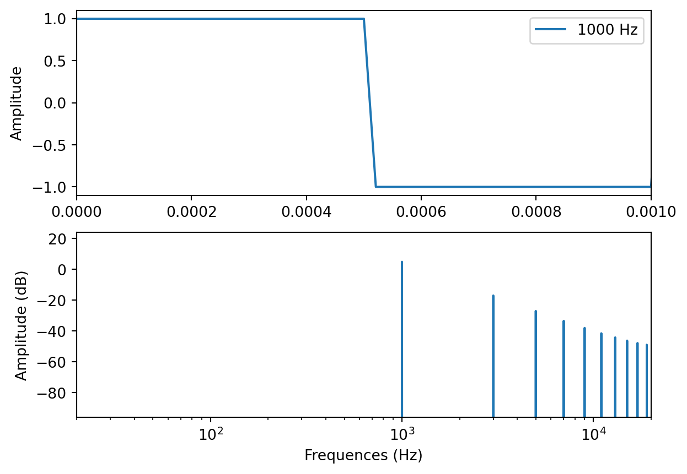

Le son peut s’appréhender de plusieurs façons différentes. Particulièrement, sa description physique et psychoacoustique est très précieuse pour tous les praticiens du son. Il convient donc, afin de pouvoir proposer un dispositif cohérent de prise de son, de comprendre la physique élémentaire du son ainsi que d’être capable de le décrire efficacement.
1.1 Phénomène physique
1.1.1 Quelques définitions
Le son est une vibration mécanique d’un fluide. Dans le cadre de ce cours, nous ne considérerons que l’air comme médium de propagation. Cette onde cause une variation de la pression dans l’espace. Nous, les êtres humains, le percevons grâce à notre ouïe. Il s’agit donc, par définition, d’un phénomène ondulatoire et peut être caractérisé par un nombre d’oscillations par seconde, aussi appelé fréquence. On estime que notre espèce est sensible aux fréquences allant de 20 Hz (très grave) jusqu’à 20 000 Hz (très aigu).
On parlera d’évènement sonore pour parler généralement de phénomènes physiques produisant une onde sonore.
Les sons composés d’une seule fréquence se nomment sons purs. Cependant, de tels signaux n’existent pas dans la nature, et sont souvent utilisés afin de réaliser des mesures ou des tests psychoacoustiques.
import matplotlib.pyplot as pltimport numpy as npfs =48000# Sample rateT =1/fs # Sample periodf0 =1000t = np.arange(0,1,1/fs)h = np.sin(2*np.pi*f0*t)# Transfer function H via FFT - same # of binsH_FFT =20*np.log(2*np.fft.fft(h, fs)/fs)plt.figure()fig, axs = plt.subplots(nrows=2, ncols=1)#axs[0].title("Onde sinusoïdale et visualisation de son spectre")axs[0].plot(t, h, label =str(f0) +" Hz")var = axs[0].set_xlim(0,1/f0)#axs[0].set_xlabel("Temps (s)")axs[0].set_ylabel("Amplitude")axs[0].legend()axs[1].plot(H_FFT)var = axs[1].set_xlim(20,20000)axs[1].set_xscale("log")var = axs[1].set_ylim(-96,24)var =0axs[1].set_xlabel("Frequences (Hz)")axs[1].set_ylabel("Amplitude (dB)")
/Library/Frameworks/Python.framework/Versions/3.11/lib/python3.11/site-packages/matplotlib/cbook/__init__.py:1369: ComplexWarning:
Casting complex values to real discards the imaginary part
Text(0, 0.5, 'Amplitude (dB)')
<Figure size 672x480 with 0 Axes>
Dans notre environnement, les sons sont donc composés de plusieurs fréquences. La fréquence la plus grave d’un son est sa fréquence fondamentale. Les autres sont alors appelées partiels. Si ces partielles ont pour fréquence un multiple de la fréquence fondamentale, alors on les nomme harmoniques.
Plus généralement, on admettra que la composition fréquentielle, ou spectrale, de tout son peut être décomposée par une somme de sinusoïde. L’outil permettant de passer de la représentation temporelle d’un signal à sa représentation fréquentiel s’appelle la transformée de Fourrier.
import matplotlib.pyplot as pltimport numpy as npfs =48000# Sample rateT =1/fs # Sample periodf0 =1000t = np.arange(0,1,1/fs)sine = np.sin(2*np.pi*f0*t)square = np.array([1if np.sin(2*np.pi*f0*x) >=0else-1for x in t])# Transfer function H via FFT - same # of binsH_FFT =20*np.log(2*np.fft.fft(square, fs)/fs)plt.figure()fig, axs = plt.subplots(nrows=2, ncols=1)axs[0].plot(t, square, label =str(f0) +" Hz")var = axs[0].set_xlim(0,1/f0)#axs[0].set_xlabel("Temps (s))")axs[0].set_ylabel("Amplitude")axs[0].legend()axs[1].plot(H_FFT)var = axs[1].set_xlim(20,20000)axs[1].set_xscale("log")var = axs[1].set_ylim(-96,24)var =0axs[1].set_xlabel("Frequences (Hz)")axs[1].set_ylabel("Amplitude (dB)")
Text(0, 0.5, 'Amplitude (dB)')
<Figure size 672x480 with 0 Axes>

La fréquence fondamentale donne la hauteur du son (sa note en musique par exemple). Les partiels enrichissent cette fréquence fondamentale et créés le timbre d’un son. C’est en partie grâce au timbre que l’on peut reconnaître différents instruments de musiques jouant la même note.
Un son se caractérise également par l’évolution de son amplitude au cours du temps. On parle alors de son enveloppe. Un modèle courant d’enveloppe est l’ADSR : Attack, Decay, Sustain, Release, soit Attaque, Décroissance, Maintient et Relâchement.
Exemple d’enveloppe ADSR
Lorsque son temps et très bref, l’ensemble attaque et décroissance forme les transitoires. Cette partie du signal est responsable de la sensation percussive du son.
1.1.2 Relation entre temps, distance et fréquence
Il est important de garder à l’esprit que les notions de temps, de fréquence et de distance sont étroitement liées. Nous avons vu ci-dessus que tous les sons peuvent être décrits par une somme de sinusoïde. Leur fréquence la plus grave, dite fondamentale, permet de définir la période. La période est le temps que met un signal à répéter son motif oscillatoire (voir schémas 3.1 et 3.2). Le lien mathématique entre fréquence et période est très simple, car l’un est l’inverse de l’autre :
\[ f = \frac 1 T \]
Si nous étudions les fréquences extrêmes, audibles par notre ouïe, nous trouvons que pour \(f_{min} = 20 \,Hz\), sa période \(T_{f_{min}} = 50 \,ms\). Pour \(f_{max} = 20\,000 \,Hz\), \(T_{f_{max}} = 0.5 \,ms\).
Une onde sonore est également caractérisée par sa célérité. Celle-ci est constante dans un milieu donné. Dans l’air, à une température de \(15 \,°C\) et au niveau de la mer, sa célérité \(c\) est de \(340\,m.s^{-1}\). On admettra cette valeur pour réaliser l’ensemble de nos différents calculs.
Comme son unité l’indique, la célérité du son est homogène à une distance divisée par un temps, soit :
\[ c =\frac d t \]
Suivant cette formule, nous pouvons alors calculer la longueur d’onde correspondant à une fréquence. La longueur d’onde se note \(\lambda\).
\[ \lambda = cT \; \iff \; \lambda = \frac c f\]
Si nous étudions à nouveau les bornes minimale et maximale de notre audition, nous trouvons que \(\lambda_{f_{min}} = 17 \,m\) et \(\lambda_{f_{max}} = 17 \,mm\).
Nous pouvons également calculer le temps de propagation du son. En pratique, nous serons souvent intéressés par le temps de propagation séparant deux points dans l’espace (par exemple, le temps séparant deux microphones par rapport à un instrument).
Distance entre deux microphones.
\[ t = \frac {d_2-d_1}{c}\]
1.2 Perception du son
Nous avons abordé quelques notions de physique permettant de mieux caractériser le phénomène sonore. Comme indiqué au début de ce chapitre, le son peut également être discuté sous l’angle de notre ouïe, et donc, de notre perception. Cette branche de la science se nomme la psychoacoustique et cherche à étudier la façon dont nous percevons le son.
Notre corps, et a fortiori notre cerveau, sont des machines extrêmement complexes. Nous sommes équipés d’une multitude de capteurs permettant de sentir le contact d’une matière, des odeurs, d’entendre, de goûter, de voir, de positionner nos membres dans l’espace, de ressentir la douleur, etc. Pris indépendamment, chacun de ces sens est déjà un phénomène complexe à décrire, mais il existe en plus une grande interdépendance entre ceux-ci. Par exemple, l’interdépendance entre la vision et l’audition est à l’origine d’un certain nombre de mécanismes biaisant notre écoute.
Nous nous bornerons au fil de ce cours à quelques notions liées à l’ouïe et à son interdépendance à d’autre sens quand cela sera pertinent.
1.2.1 Spectre, timbre et vocabulaire
D’un point de vue perceptif, le spectre d’un évènement sonore est facilement remarquable. Il est, par contre, beaucoup plus difficile à qualifier. Il n’est pas rare de rencontrer les adjectifs “chaud”, “brillant”, “rond”, “aéré”, “ouvert”, “sombre”, voir d’autres encore plus ésotérique, pour tenter de communiquer la sensation ressentie à l’écoute de tel ou tel son.
Cette difficulté liée à l’absence de vocabulaire commun quant à la qualification le son emmène systématiquement la redéfinition de ce vocable en fonction de son interlocuteur. En effet, le mot “rond” ne signifiera pas forcément la même chose selon à qui on s’adresse. Une stratégie possible consiste à questionner son interlocuteur sur l’utilisation de ses adjectifs tout en cherchant à y associer des exemples sonores.
Nous pouvons tout de même nous essayer à cet exercice pour nous permettre d’avoir un vocabulaire commun au fil de ce cours. Vous aurez sans doute compris qu’il n’y aura, dans les termes employés, aucun critère absolu.
Exemple de spectre
Proposition d’association entre bandes de fréquences et sensation.
380 Hz — 1400 Hz : Medium, sensation de « boîte » quand trop présent, sonne « creux » quand trop absent
1400 Hz — 3200 Hz : Haut-medium : zone de sensibilité maximale de l’oreille.
3200 Hz — 8000 Hz : Aigu, apporte de la précision voir de l’agressivité
8000 Hz — 20 000 Hz : Air, apporte une sensation d’ouverture voir de finesse
Il est intéressant de former son oreille à reconnaître une plage de fréquence, ainsi que d’y associer son propre vocabulaire et une sensation. Les appellations proposées ci-dessus ne sont à prendre que comme guides et n’ont pas valeur de référence. Cela favorise une écoute critique et analytique.
Aussi, les fréquences graves ont un effet masquant sur les fréquences plus aiguës. Ce phénomène est dû au fonctionnement de notre oreille, et plus particulièrement de la cochlée.
1.2.2 Pression acoustique & niveau sonore
Nous l’avons abordé plus haut, lorsqu’une onde sonore se déplace dans l’air, on constate la variation de la pression atmosphérique en ce point. Dès lors, il est facile de corréler l’amplitude de la variation de la pression avec le niveau sonore entendu (ou mesuré).
L’unité du système international de la pression est le pascal (Pa). Or, il est très rare de parler de la pression acoustique en pascal, car la variation de cette pression exprimée en pascal ne correspond pas à ce que nous percevons. En d’autres termes, si la pression acoustique exprimée en pascal double, nous ne percevons pas un son deux fois plus fort.
Notre oreille fonctionne de façon logarithmique, et non linéairement, face à une variation de pression acoustique. C’est pour cela que l’on parle généralement de niveau de pression acoustique, où SPL (pour Sound Pressure Level en anglais), qui s’exprimera en décibel. La relation entre la variation de pression et le niveau de pression acoustique se fait grâce à la relation :
Si la pression acoustique double, on observe une augmentation du niveau sonore de 6 dB SPL. Lorsqu’on ressent un doublement du niveau sonore, on observe une augmentation de 20 dB.
La pression acoustique est divisée par deux à chaque doublement de distance.
La question se complexifie lorsque l’on rajoute la dimension fréquentielle à la question de la perception du niveau sonore. En effet, nous percevons des niveaux sonores différents pour différentes fréquences pourtant émises au même niveau de pression acoustique. Pour inclure cette dépendance fréquentielle, nous avons mis en place une unité de mesure : la sonie ou bruyance (loudness en anglais). Il est donc possible ensuite de définir des courbes d’isosonie, c’est-à-dire des courbes indiquant un niveau sonore de perception égale en fonction de la fréquence et du niveau de pression acoustique.
Courbes d’isosonie, aussi dites de Fletcher-Munson
Que conclure de cet abaque ?
Notre oreille ne perçoit pas les fréquences de manière égale.
Notre zone de sensibilité maximale se situe dans l’aigu (3k-4k Hz).
Notre perception d’un matériau sonore en fonction du niveau auquel nous l’écoutons !
1.2.3 Positionnement dans l’espace
Notre système auditif nous permet de situer l’émission d’un son dans l’espace. Cette capacité de localisation repose sur un ensemble de facteurs étroitement liés entre eux.
On qualifie notre écoute de binaurale, littéralement, écouter avec deux oreilles. La présence de deux “capteurs de pression” (oserait-on parler de microphones ?) sur les faces latérales de notre crâne et un premier élément expliquant notre capacité de localisation du son.
En effet, l’espacement de nos oreilles (en moyenne 15 cm), créer un décalage temporel entre nos deux canaux d’écoutes. Ce léger retard entendu d’un côté ou de l’autre nous permettra de placer un son plutôt à gauche ou plutôt à notre droite. On appelle cet écart de temps différence de temps interaural, ou ITD (interaural time difference en anglais) et se note \(\Delta t\).
On pourrait d’ailleurs, grâce aux formules de ce début de chapitre, calculer le retard maximal moyen entre nos deux oreilles.
\[\Delta t_{max} = \frac d c = \frac {0,15}{340} = 0.4 \> ms\]
Illustration de l’ITD
Si nos oreilles sont espacées de quelques centimètres, notre tête les séparant représente un obstacle acoustique non négligeable. De plus, les pavillons des oreilles imposent également une certaine directivité à notre écoute. En première approximation, on pourra donc considérer que l’ensemble formé par la tête et les pavillons implique une atténuation linéaire des ondes sonores, elle-même fonction de l’angle d’incidence. On appelle cette différence de niveau différence d’intensité interaural, ou ILD (interaural level difference) et se note \(\Delta i\). On considère que si la différence de niveau de pression acoustique entre les deux oreilles est supérieure à 20 dB, on entendra l’évènement sonore complètement latéralisé.
L’ombre acoustique que représentent la tête et le pavillon n’est en réalité pas du tout linéaire en fréquence. La modification du timbre induite par ce système n’est pas perçue par notre cerveau comme une information de couleur, mais bien comme une information de spatialisation. Ainsi, selon l’angle d’incidence de l’évènement sonore, son spectre sera filtré d’une certaine manière qui permettra à notre cerveau de le positionner dans l’espace. La réponse en fréquence d’une tête se nomme HRTF (Head Related Transfer Function).
Enfin, nous sommes également capables de déterminer la distance d’un évènement sonore. La plupart des paramètres permettant d’évaluer cette distance sont relatifs. Cela signifie que l’évènement doit être comparé à un autre pour pouvoir le repositionner dans l’espace. On pourra alors comparer :
Leurs niveaux sonores : un évènement sonore plus fort paraît plus proche
Leurs timbres : l’absorption de l’air aura pour effet de diminuer les fréquences aiguës
La sensation de réverbération associée : plus le signal de l’évènement sonore semblera solliciter la réponse acoustique du lieu, plus celui-ci semblera fort.
Le temps d’arrivée des premières réflexions : le son direct d’un évènement sonore lointain arrivera quasi simultanément avec ses premières réflexions. Le son direct d’un évènement sonore proche arrivera avant ses premières réflexions.
Le chapitre suivant traitera des notions d’acoustique élémentaire ainsi que de la réverbération.